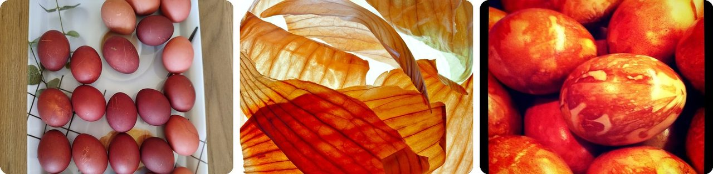
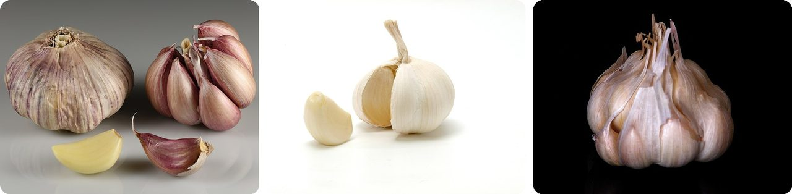
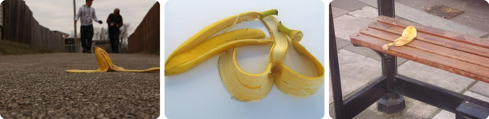
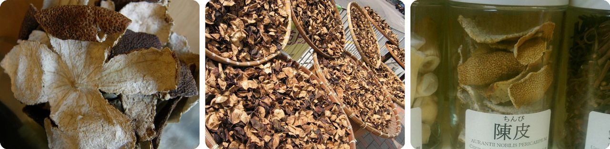
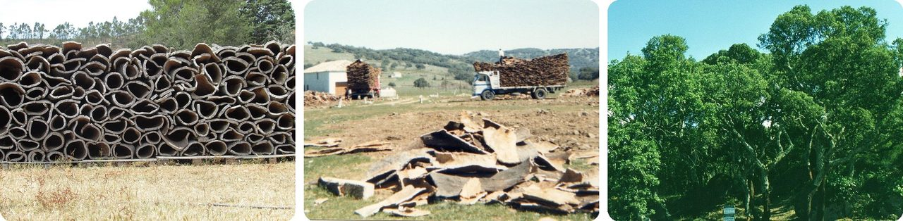
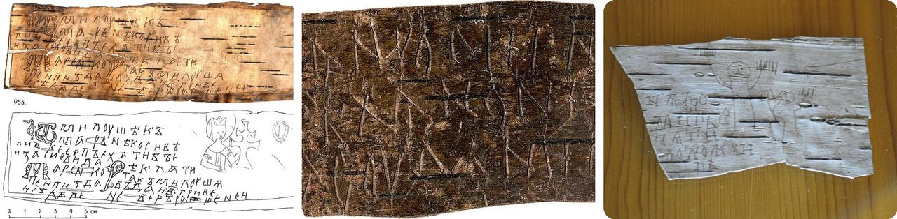
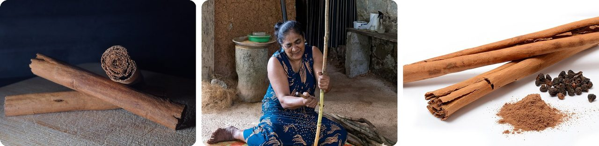
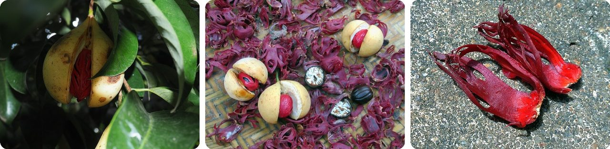
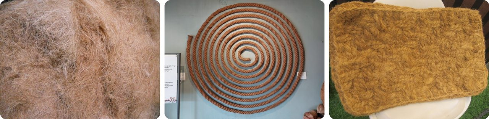
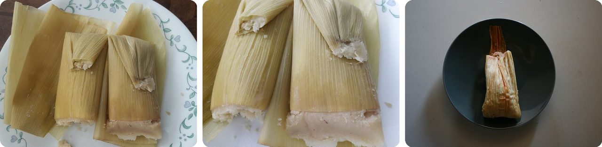

🌍 Top 10 Natural Wrappers and Peels
Oct 6, 2026
1. 🧅 Onion skins dye Easter eggs a deep red-brown

An onion bulb is really a stack of swollen leaves wrapped around a bud. When the plant stops growing, the outermost leaves dry out into the thin, crackly skin you peel off and throw away.
Don't toss them. Boil onion skins and they make an orange-brown dye. In Greece, women traditionally dye Easter eggs with onion skins and vinegar on the Thursday before Easter, and the deep red eggs are called kokkina avga.
Some families tie the skins onto the egg with colored yarn before boiling, so the egg comes out with patterns. In the north of England, decorated eggs like these are called "pace eggs."
Basically, the part you peel off is free paint.
2. 🧄 Garlic's papery skins are actually leaves

A garlic bulb usually holds 10 to 20 cloves. Each clove sits inside its own thin wrapper, and the whole bulb is bundled in more layers on the outside.
Those wrappers aren't really skin. They're sheathing leaves: leaves that wrap around the clove instead of sticking out, and dry thin as paper.
And each clove is a ready-to-grow plant. Almost all garlic is grown by planting single cloves in the ground, and each one grows into a whole new bulb.
Think of it as a bag of baby plants, each in its own gift wrap.
3. 🍌 Banana peels really are dangerously slippery

The slipping-on-a-banana-peel joke goes back to at least 1854. It caught on in the late 1860s, when bananas started arriving in the US in bulk and people tossed the peels in the street. Some towns passed rules about where you could throw them.
The danger was real. Scientists measured the grip of a banana peel on a linoleum floor and found it was about half as grippy as oiled metal on metal. When you step on it, a gel inside the peel gets crushed into a slick paste.
That finding won the 2014 Ig Nobel Prize in physics.
In other words, it's a banana-flavored ice patch.
4. 🇨🇳 In China, mandarin peel is aged like fine wine

Chenpi is mandarin orange peel that's dried in the sun and then stored dry to age. It's used to season Chinese cooking and in traditional medicine.
The taste starts slightly sweet and finishes sharp and bitter. The most prized chenpi comes from Xinhui, in southern China, and people there have made a living from it for centuries.
Citrus peel has been part of traditional Chinese medicine since the Song dynasty, a tradition that has lasted about 700 years. Before cooking, you soak the hard dried peel in cold water for up to half an hour to soften it.
Think of it as the peel you'd throw away, turned into a vintage.
5. 🇵🇹 Cork is tree bark peeled off every nine years

The cork in a wine bottle is the bark of the cork oak tree. Once a tree is about 25 years old, workers cut its thick bark with a sharp axe and pry it off in big slabs, without killing the tree.
The tree then grows a fresh layer of bark, and it's peeled again about every nine years. A cork oak can live up to two centuries, so one tree can be harvested again and again. The first two harvests are rough, so the best wine-stopper cork comes from the third and fourth.
Portugal produces about half of the world's cork.
Basically, it's a tree that gets a haircut once a decade.
6. 🇷🇺 Medieval Russians wrote letters on birch bark

The white outer bark of a birch is tough, waterproof and bendy like thin cardboard. Before paper was common, people scratched notes into it.
In 1951, archaeologists in the city of Novgorod dug up the first Russian birch bark letter, from around the year 1400. By 2018, they had found more than 1,100 in Novgorod alone.
Less than 3% of medieval Novgorod has been dug up. The head of the dig estimated that more than 20,000 letters are still waiting underground.
It's a whole city's mail, written on tree skin.
7. 🪵 A cinnamon stick is rolled-up tree bark

Cinnamon is the inner bark of cinnamon trees. When the strips of bark dry, they curl up on their own into the tubes you buy as cinnamon sticks.
That curling gave cinnamon an old English name, canella, from a Latin word for "tube."
Farmers don't cut the tree down for good. They let it grow for two years, cut the stems off at ground level, and the next year about a dozen new shoots sprout from the roots, ready for the next harvest.
So a cinnamon stick is bark that rolled itself up for you.
8. 🇮🇩 Mace is the red lacy wrapper around a nutmeg

The nutmeg tree gives two spices from one fruit. The seed is nutmeg. The bright red, lacy net wrapped around the seed is a second spice called mace.
Workers peel the red net off, flatten it, and dry it for 10 to 14 days, until it turns orange or tan. It tastes like a softer nutmeg.
The nutmeg tree is native to the tiny Banda Islands in Indonesia, and its spices were worth fighting over. In 1667, the English traded the Dutch their claim to Run, one of the islands, for New Amsterdam: the place we now call Manhattan.
It's the most valuable gift wrap in history.
9. 🥥 Coconut husks became ship ropes and doormats

Between a coconut's smooth outer skin and its hard inner shell is a thick layer of brown fiber called coir. The word comes from Tamil and Malayalam words for rope.
Coir is tough, and it floats. That made it perfect for ropes on boats, because long lengths in deep water don't drag anything down. Arab writers in the 1000s described ships rigged with coir rope.
Today the same fiber ends up in doormats, brushes and mattresses.
In other words, the coconut's packing material holds ships together.
10. 🇲🇽 Corn husks have wrapped tamales for thousands of years

A tamale is corn dough with a filling, wrapped in a corn husk (the leafy cover around an ear of corn) or a banana leaf and steamed. The husk holds it together while it cooks, and you can toss it or use it as a plate.
Tamales may go back as far as 8000 to 5000 BC in Mexico and Central America. Archaeologists have found fossilized corn husks around the great pyramids at Teotihuacan, near Mexico City.
The English word "husk" probably comes from an old Dutch word meaning "little house."
It's the original lunch wrap, and it's biodegradable.
Fun fact
In the 1600s, the English scientist Robert Hooke looked at a thin slice of cork under a microscope and saw it was made of tiny compartments. He named them "cells," and the word stuck for the building blocks of every living thing. Today, students usually see their first cells by peeling the one-cell-thick layer from inside an onion, because its cells are big and easy to spot. Microscopes have shown us a whole hidden world: next time, the weirdest things ever seen under a microscope.
Photo credits (Wikimedia Commons)
- #1: Easter eggs dyed with onion skins.jpg by Մարի Ավետիսյան, CC BY-SA 4.0
- #1: Onion Skin 3 (flickr) by ~jar{}, CC BY 2.0
- #1: Eggs, wrapped in onion skins and boiled (flickr) by someToast, CC BY-SA 2.0
- #2: Garlic bulbs and cloves.jpg by Ivar Leidus, CC BY-SA 4.0
- #2: Opened garlic bulb with garlic clove.jpg by Dubravko Sorić SoraZG on Flickr, CC BY 2.0
- #2: garlic portrait (flickr) by Muffet, CC BY 2.0
- #3: Banana peel on the ground.jpg by Vladiator360, CC BY-SA 4.0
- #3: Banane-A-05 cropped.jpg by Priwo, Public domain
- #3: Banana peel on seat.JPG by Lemur12, CC BY-SA 3.0
- #4: Chenpi,陳皮,Citrus unshiu 5026687.JPG by 松岡明芳, CC BY-SA 3.0
- #4: Chenpidrying.jpg by Flickr user: sfllaw, CC BY-SA 2.0
- #4: Chinpi.jpg by Hanabishi, CC BY-SA 3.0
- #5: 09-06-2017 Harvested cork, Foz do Ribeiro, São Bartolomeu de Messines (1).JPG by Kolforn (Kolforn) I'd appreciate if you could mail me (Kolforn@gmail.com) if you want to use this picture out of the Wikimedia project scope. This file is licensed under the Creative Commons Attribution-Share Alike 4.0 International license. You are free: to share – to copy, distribute and transmit the work to remix – to adapt the work Under the following conditions: attribution – You must give appropriate credit, provide a link to the license, and indicate if changes were made. You may do so in any reasonable manner, but not in any way that suggests the licensor endorses you or your use. share alike – If you remix, transform, or build upon the material, you must distribute your contributions under the same or compatible license as the original.https://creativecommons.org/licenses/by-sa/4.0CC BY-SA 4.0 Creative Commons Attribution-Share Alike 4.0 truetrue, CC BY-SA 4.0
- #5: Loading cork oak bark in Reserva Nacional de Cortes de la Frontera 1987.jpg by JopkeB, CC BY-SA 4.0
- #5: Cork oak forest with harvested bark.jpg by Omar Hoftun, CC BY-SA 3.0
- #6: Birch bark letter N 955.jpg by Matchmaker Milusha, Public domain
- #6: Birch-bark letter 292 real.jpg by Unknown, photographed by Gratomy.ru, Public domain
- #6: Birch bark No 202 - Novgorod Kremlin Museum.jpg by Лапоть, CC0
- #7: Pile of cinnamon sticks.jpg by Gnu-Bricoleur, CC BY 4.0
- #7: Traditional preparation of cinnamon bark in Balapitiya, Sri Lanka, 20260207 0852 9188.jpg by Jakub Hałun, CC BY 4.0
- #7: Cinnamomum verum spices.jpg by Simon A. Eugster, CC BY-SA 3.0
- #8: Nutmeg fruit with mace.jpg by Schlawensko, CC BY-SA 4.0
- #8: Nutmeg and Mace (48208793767).jpg by David Stanley from Nanaimo, Canada, CC BY 2.0
- #8: Mace of nutmeg jathipathri.jpg by Sailesh, CC BY-SA 3.0
- #9: Coir fibery.jpg by Fotokannan, CC BY-SA 3.0
- #9: Coir rope for display at Coir Museum.jpg by Vis M, CC BY-SA 4.0
- #9: Coir doormats coconut products Philippines1.jpg by unknown, CC BY-SA 4.0
- #10: Tamales Mexicanos sweet corn tamales 01.jpg by Usernet123u, CC BY-SA 4.0
- #10: Tamales Mexicanos sweet corn tamales 03.jpg by Usernet123u, CC BY-SA 4.0
- #10: Tamale (flickr) by Artotem, CC BY 2.0


.JPG){kind=link}


.jpg){kind=link}